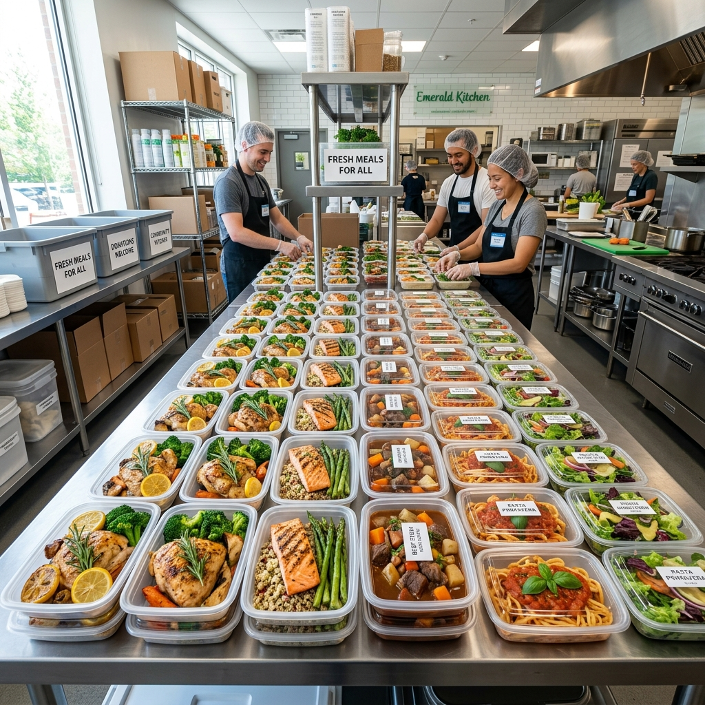

FoodBridge helped us redirect end-of-day meals in under an hour. Pickup reliability is now part of our kitchen routine.

Every Meal Counts
Your Surplus Can Feed Communities
Turn excess food into life-changing meals. Schedule a pickup in minutes and our verified volunteer network delivers it to families, shelters, and community kitchens.
Start Your Donation
Verified Recipients
42 min Avg Pickup
95% Success Rate
End-to-End Tracking
Our Impact in Numbers
1,200,000+
Meals Redirected
42 min
Avg Pickup Assignment
350+
Verified NGO Partners
95%
First-Attempt Success Rate
How It Works
Donating Food Has Never Been Easier
List your surplus, pick a time, and our network handles collection. Every item is tracked with complete transparency from your door to the table.
1
List Your Items
Specify what you're donating — cooked meals, raw ingredients, or packaged goods — for accurate matching.
2
Schedule Pickup
Choose a time slot. A verified FoodBridge volunteer is auto-assigned based on proximity and route efficiency.
3
Track Your Impact
Follow your donation from pickup to delivery. Every handoff is logged and verified by our quality team.
Simulate Your Impact
See how food quantities translate into community meals.
Serving Target
100
Value Equivalent
₹250
Donate Food
Secure & Tracked
Food Safety Checklists
Verified Role-Based Access
End-to-End Pickup Tracking
Trusted by Active Donors
Teams using FoodBridge report faster pickups, less waste, and better impact reporting.
The template feature saves our team time every day. We can list, confirm, and track each dispatch without phone calls.
We now have transparent logs for each handoff. That made CSR reporting and audits significantly easier for our team.
Frequently asked questions
Everything you need before submitting your first donation request.
What food can I donate?
Cooked meals, fresh produce, packaged items, bakery goods, and beverages are accepted when safely stored and labeled.
How quickly does pickup happen?
Most urban requests are assigned within 30 to 60 minutes based on route density and volunteer availability.
Can I donate regularly?
Yes. Donor accounts can save templates and recurring schedules for repeat dispatches.
How do I track impact?
Each donation updates in your dashboard with pickup and delivery milestones for transparent impact reporting.
Ready to rescue more food today?
Start with one listing and scale into recurring impact. Every donation helps reduce waste and feed families.